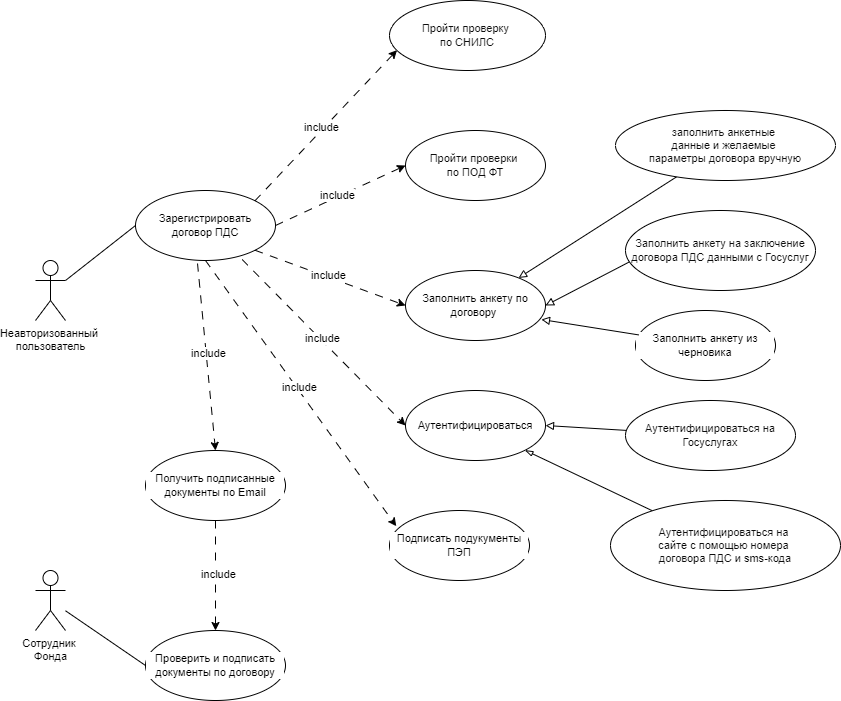

Пример описания Use-case диаграммы

Пример сценария
Ожидаемый результат:
Не авторизованный пользователь нажал на кнопку «Личный кабинет» и выбрал вариант аутентификации «По номеру договора». Сайт отобразил форму ввода СНИЛС и номера договора.
Пользователь ввел данные и запросил код подтверждения. Сайт запросил данные по номеру договора в КХД. Если запрошенный договор был оформлен без авторизации и СНИЛС в договоре совпадает с указанным на форме, сайт отправил на номер телефона указанный в договоре, смс-код. В противном случае, смс-код(что бы ввести в заблуждение мошенников).
Пользователь ввел смс-код. Сайт отобразил пользователю перечень уведомлений по договору, по номеру которого произошла авторизация.
Предусловие:
Не авторизованный пользователь находится на странице авторизации и выбрал пункт «Авторизация по номеру договора»
- Система отображает форму для ввода ФИО, СНИЛС, номера договора. Пользователь вводит запрошенные значения и нажимает кнопку «Получить код».
- Система находит в КХД договор с указанным номером.
Альтернативный сценарий: 2.1: Договор не найден. Система отображает вторую части формы для ввода кода. См. шаг 4
- В найденном договоре, СНИЛС совпадает с введенным значением. Система отправляет на номер телефона указанный в договоре sms-код подтверждения и отображает вторую часть формы для ввода кода.
Альтернативный сценарий: 3.1: СНИЛС не совпадает. Отображение второй части формы для ввода кода. См. шаг 4
- Пользователь вводит присланный код и нажимает кнопку «Подтвердить». Система предоставляет доступ к уведомления по заданному номеру договора.
Альтернативный сценарий: 4.1: Пользователь вводит произвольный код. Система сообщает о вводе некорректного кода
- Успешно авторизованный по номеру договора Пользователь, имеет доступ к следующему функционалу
Вкладка "Уведомления" На вкладке отображается только уведомления по договору, по которому была выполнена авторизация.
Остальные вкладки доступны как для неавторизованного пользователя.
{kind=link}